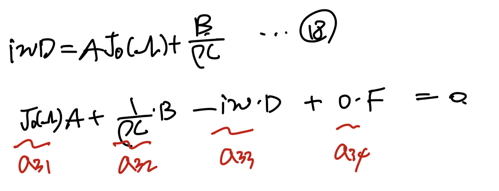
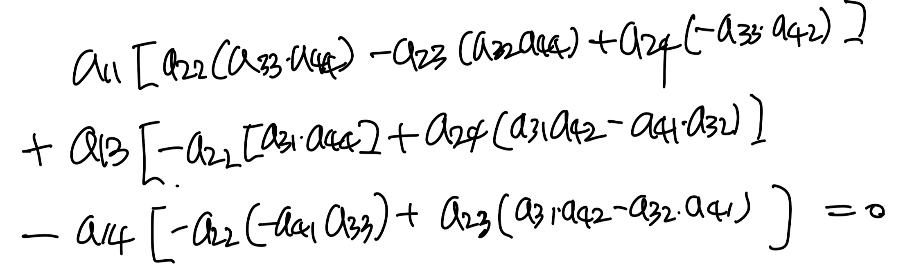
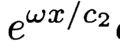
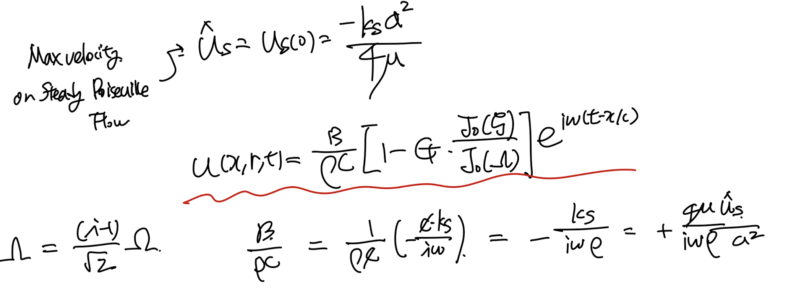
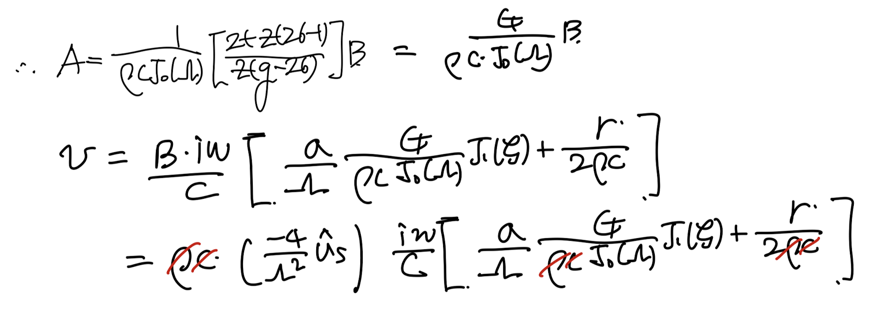

[Pulsatile flow] 4. Coupling with Fluid motion on the elastic tube wall2- Boundary condition
지난 포스터에서 Surface boundary condition을 이용하여,
일반해의 계수를 위한 4가지 식을 유도하였다.
![[Pulsatile flow] 4. Coupling with Fluid motion on the elastic tube wall2- Boundary condition](./images/img-001.png)
각 식들을 A,B,D,F의 항등식으로 표현해보자.
![[Pulsatile flow] 4. Coupling with Fluid motion on the elastic tube wall2- Boundary condition](./images/img-002.png)
16'번식
![[Pulsatile flow] 4. Coupling with Fluid motion on the elastic tube wall2- Boundary condition](./images/img-003.png)
17'번식

18번식
![[Pulsatile flow] 4. Coupling with Fluid motion on the elastic tube wall2- Boundary condition](./images/img-005.png)
19번식
이를 행렬식으로 표현하면,
![[Pulsatile flow] 4. Coupling with Fluid motion on the elastic tube wall2- Boundary condition](./images/img-006.png)
중요한 것은 A,B,D,F가 일반해의 임의의 constant이므로
어떠한 수가 와도 성리하는 항등식이어야 한다.
따라서, det(계수행렬) = 0. 을 만족해야 한다.

det(계수행렬) = 0 식
우리는 각 계수들을 모두 구했으므로 이를 대입해주면,
![[Pulsatile flow] 4. Coupling with Fluid motion on the elastic tube wall2- Boundary condition](./images/img-008.png)
위 식으로 우리는 z의 2차방정식을 유도하였다.
방정식의 계수중
g는 유체 propagation 파동의 진동수에 따라 달라지며,
나머지는 모두 유체,고체의 property들이다.
따라서, 파동의 진동수에 따라서, 이차방정식의 . 해 즉
z가 달라지게 된다.
이후, 우리는 rigid wall일때와의 비교를 위해서,
![[Pulsatile flow] 4. Coupling with Fluid motion on the elastic tube wall2- Boundary condition](./images/img-009.png)
Inviscid rigid wall에서 파동의 전파속도.
를 이용하여, z를 나타내자.
![[Pulsatile flow] 4. Coupling with Fluid motion on the elastic tube wall2- Boundary condition](./images/img-010.png)
진동수와 c/c0의 관계를 위 방정식을 통해 나타내보면,
c = 실수부분 + 허수부분 * i
![[Pulsatile flow] 4. Coupling with Fluid motion on the elastic tube wall2- Boundary condition](./images/img-011.png)
실선: 실수부/c0, 점선: 허수부/c0- normalized by co
위를 보면, 진동수가 어느정도 이상이면
c_real/c0 - 1 에 근사해진다는 것을 알 수 있다.
즉, inviscid flow의 형태로 진동수가 커지면
점성효과가 줄어든다는 것이다.
점성의 효과를 제대로 살펴보기 위해서.
허수부분과 실수부분을 분수형태로 정의해보자.
![[Pulsatile flow] 4. Coupling with Fluid motion on the elastic tube wall2- Boundary condition](./images/img-012.png)
이를 원래 주기함수에 대입해주면,
![[Pulsatile flow] 4. Coupling with Fluid motion on the elastic tube wall2- Boundary condition](./images/img-013.png)
![[Pulsatile flow] 4. Coupling with Fluid motion on the elastic tube wall2- Boundary condition](./images/img-014.png)
분모로 정의한 c1,c2를 c0으로 나누어 준.
![[Pulsatile flow] 4. Coupling with Fluid motion on the elastic tube wall2- Boundary condition](./images/img-015.png)
c1/c0 - 실선, c2/c0 - 점선
자 위 그래프와 밑 식을 매칭하며 점성의 효과를 해석해보자.
진동수가 커질수록, c1/c0 - 1을 향해서 가며,
inviscid flow를 향해 가는 것을 알 . 수있다.
반대로, 진동수가 어느 지점 이하일때는
c1이 진동수에 따라서 달라지며 이는
점성효과로 인한 것임을 알 수 있다.
따라서, 우리는 점성에 의한 파동의 Attenuation
이라고 할 수 있다.
그리고 이 파동함수의 진폭은

이 식이 결정하는데,
c2/c0가 진동사 커지면 -infinity로
발산하는 것을 그래프로 확인 할 수 있다.
즉, viscosity로 인한 dispersion 이며,
진폭 - 1 즉, 원래 inviscid flow의 진폭과 동일하게 된다.
여기서,
A,B,D,F 식 4개를 통해서,
A,D,F 를 B로만 나타내보자.
![[Pulsatile flow] 4. Coupling with Fluid motion on the elastic tube wall2- Boundary condition](./images/img-017.png)
B를 가지고 나타내는 이유는 보통,
압력장은 사용자가 input하는 요소이기 때문에,
user가 이미 알고 있는 값이다.
16',17',18,19식을 통해서, 다음과 같이 정리한후
![[Pulsatile flow] 4. Coupling with Fluid motion on the elastic tube wall2- Boundary condition](./images/img-018.png)
이제 각 상수들을 우리가 원래 정의하던 식들에 대입해주자.
먼저 x방향의 속도식의 A에 대입해주면,
![[Pulsatile flow] 4. Coupling with Fluid motion on the elastic tube wall2- Boundary condition](./images/img-019.png)
이 속도장을 Steady Poisuille flow와 비교하기 위해서,
Max velocity us_hat, Pressure gradient ks를 이용하자.

정리하면,
![[Pulsatile flow] 4. Coupling with Fluid motion on the elastic tube wall2- Boundary condition](./images/img-021.png)
최종적으로, 속도장은 다음과 같이 표현
![[Pulsatile flow] 4. Coupling with Fluid motion on the elastic tube wall2- Boundary condition](./images/img-022.png)
같은 방법으로 r방향의 속도장을 정리해보면,
![[Pulsatile flow] 4. Coupling with Fluid motion on the elastic tube wall2- Boundary condition](./images/img-023.png)

![[Pulsatile flow] 4. Coupling with Fluid motion on the elastic tube wall2- Boundary condition](./images/img-025.png)
최종적으로 우리는 Flow 속도의 계수들을 정리까지 완료하였고,
마지막으로, Rigid wall과 Elastic wall의 flow rate를 비교해보자
![[Pulsatile flow] 4. Coupling with Fluid motion on the elastic tube wall2- Boundary condition](./images/img-026.png)
위 그래프를 보면 pressure gradient와 조금 더 모형이 비슷한 파동은
실선 - Elastic tube임을 알 수 있다.
따라서, pulsatile flow의 파동이 유체의 흐름에 더 잘 표현되어 있음을 알 수 있다.